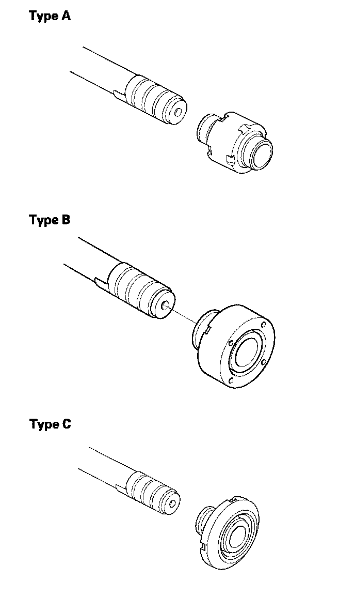
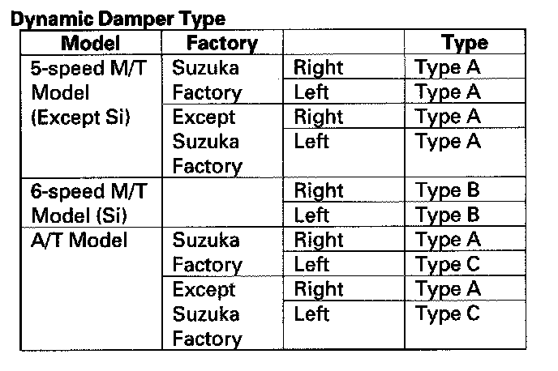
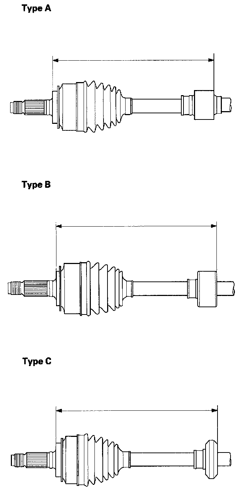
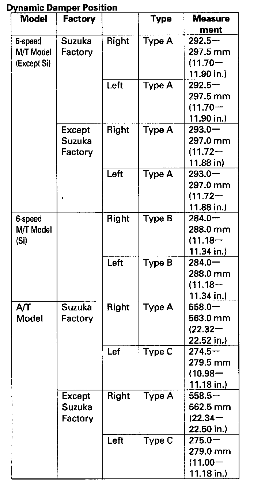

Dynamic Damper Replacement
Dynamic Damper Replacement1. Remove the inboard joint.
2. Remove the dynamic damper bands.
^ If the band is a welded type, cut the band.
^ If the band is a double loop type, lift up the band bend, and push it into the clip.
^ If the band is a low profile type, pinch the band using a commercially available boot band pliers.
3. Remove the dynamic damper.


4. Install the new dynamic damper and adjust the position of the new dynamic damper to these measurements
NOTE: Be careful not to swap the dynamic damper.


5. Install the dynamic damper band.
6. Install the inboard joint.